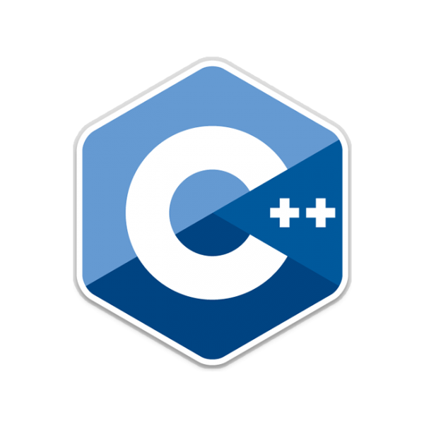

Matt Highfield
A software developer based in San Francisco

A web application based on Flickr, built using Ruby on Rails and React. Designed for artists to share photos of their paintings.
A re-make of a classic, tetris-like game for the NES. Built using JavaScript and HTML5 Canvas.
An even classier classic. Built for the terminal, using Ruby and Object Oriented design techniques.
Matt Highfield
Software Developer